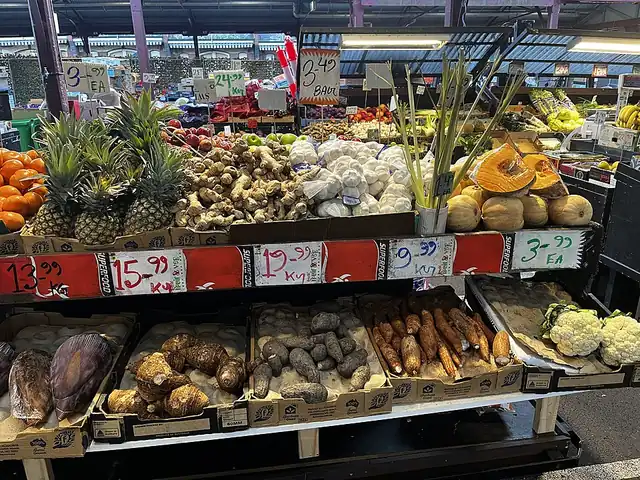

Queen Victoria Market - A Shed, Melbourne
Queen Victoria Market - A Shed is a shopping centre in Melbourne, in the Melbourne City Council area, handy for a rainy day or a quick stop. Peel St/Victoria St #8 (tram) is a 1-minute walk away and the nearest public toilet is about 62 m away.


Quick facts
- Toilets
- 62 m away, accessible
- Public transport
- Peel St/Victoria St #8, tram (routes 57), 1 min walk
This page has basic info from the map: name, location and type. We have not checked the details yet. Know this place? Tell us.
Questions parents ask
- Where is Queen Victoria Market - A Shed?
- Queen Victoria Market - A Shed is in Melbourne, Victoria.
- Are there toilets at Queen Victoria Market - A Shed?
- The nearest public toilet is about 62 m away.
- How do I get to Queen Victoria Market - A Shed by public transport?
- The closest stop is Peel St/Victoria St #8 (routes 57), a 1-minute walk.
Nearby places
- Market Juice
Cafe or restaurant · MelbourneToilet nearbyTram 1 min walk
- The Galbi
Cafe or restaurant · North MelbourneToilet nearbyTram 1 min walk
- narrm ngarrgu Library and Family Services
Library · MelbourneToilet nearbyFreeTram 2 min walk
- Howard and William Street Reserve
Park · West MelbourneToilet nearbyFreeTram 1 min walk
- Courtney Street Reserve
Park · North MelbourneToilet nearbyFreeTram 1 min walk
- Bedford Street Pocket Park
Playground · North MelbourneFreeTram 1 min walk
- Flagstaff Gardens Playground
Playground · West MelbourneToilet nearbyFreeBus 2 min walk
- Melbourne City Baths
Pool or water play · MelbourneToilet nearbyTram 1 min walk